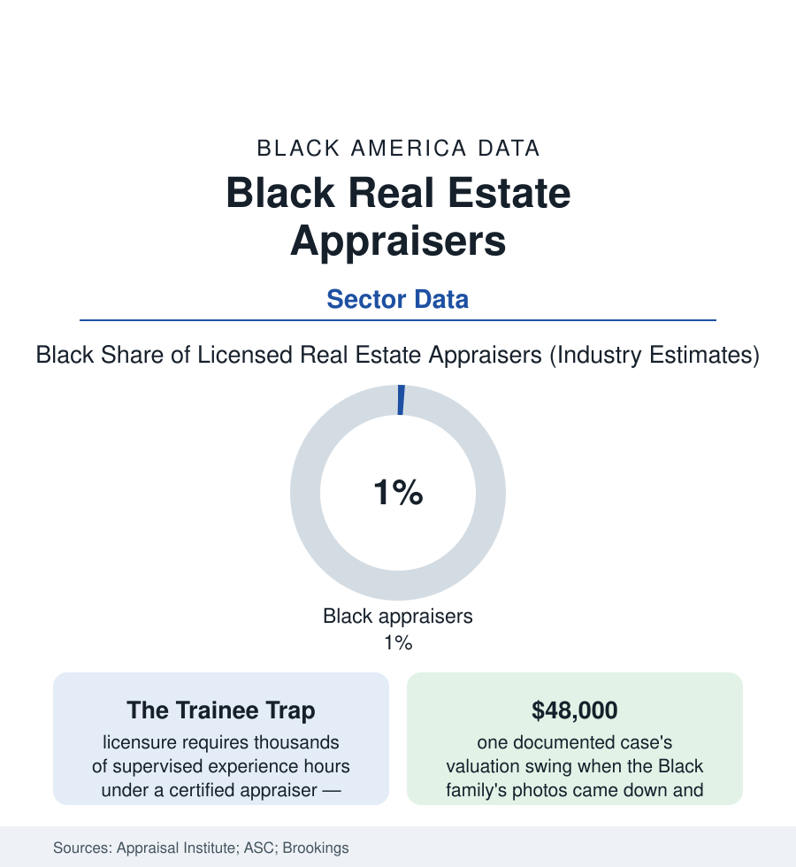

Black Business
The Appraisers: The Small Profession That Decides What Every Home Is Worth
Fewer than one in a hundred licensed appraisers is Black — in the profession whose signature sets the value of Black America's largest asset. The appraisal file.

Every home sale and refinance in America passes under one signature: the appraiser's. The profession that signs is, by its own institute's research, among the least diverse in the economy — Black appraisers at roughly one percent of the licensed ranks, a figure that matters beyond its size because the asset being valued is the Black family's balance sheet itself. This article reads the appraisal file.
One Percent at the Valuation Desk
The pipeline explains itself in the licensure's design: the certified appraiser's credential requires a degree, hundreds of classroom hours, and — the binding constraint in the profession's own analyses — thousands of hours of experience worked under a supervising certified appraiser who must agree to train a future competitor. In an overwhelmingly white, aging, family-firm profession (the dynastic pattern of the institute's demographics: appraisers' children and referrals filling the trainee slots), the aspiring Black appraiser faces the mentorship market's cold arithmetic: no supervisor, no license — the same structural gate the CPA file met at its experience requirement, drawn tighter by the profession's smallness. The consequence rows sit in the market data: the appraisal management companies' panels and the lenders' assignment systems routing the nation's valuations through a workforce whose demographics the federal studies then correlate, carefully, with outcomes — the Freddie Mac analysis of millions of appraisals finding homes in Black neighborhoods likelier to appraise below the contract price, the Brookings and academic replications, and the paired-testing literature's documented cases (the Black family's home valued twice, months apart, the second time — photographs removed, a white friend greeting the appraiser — hundreds of thousands of dollars higher) moving the issue from the journals to the federal task force (the PAVE initiative, the first federal examination of appraisal bias, whose reports name the workforce's composition among the system's structural exposures). The profession's defense is entered in the record with its due weight: the appraisal is constrained by comparable sales whose prices carry the neighborhood's history into every valuation — the appraiser, on this account, reports the market's bias rather than authoring it — a defense the researchers answer with the residual gaps that survive the comparables' controls, and with the observation that the comps themselves are the redlining file, compounded.
The Reform Race
The response now runs on parallel tracks in the policy data: the licensure reforms (the experience requirement's alternatives — the PAREA practical-training programs approved in state after state in the recent sessions, letting trainees earn hours in supervised simulations and case studies rather than at a patron's pleasure, the reform designed specifically to break the mentorship gate), the pipeline programs (the Appraisal Institute's and the lenders' diversity scholarships, the HBCU outreach of the education file's newest chapter), the technology displacement (the automated valuation models and appraisal waivers of the mortgage data absorbing the routine valuations — whose own bias the regulators now audit in the algorithms, the profession's human gatekeeping partly succeeded by models whose inputs are the same tainted comparables, a recursion the policy literature is only beginning to price), and the Black appraisal firms' own market (the established practices of the business file, their principals' testimony now in the congressional record, winning lender-panel and government work as the industry scrambles for the representation its own numbers indict). The stakes are the homeownership file's: every undervaluation is equity unbuilt — the down payment for the child's house, the business loan's collateral, the wealth gap's arithmetic done one signature at a time. The profession that holds the pen is one percent Black. The files around this one are, in a real sense, about what that pen has written. The clock on the work is demographic as much as political: the profession's median age has climbed into the late fifties in the registry data, its retirement wave guaranteeing that a generation of panels turns over this decade — with the trainee gate deciding, one supervised hour at a time, who replaces them.
Reading the Appraisal Data
The census of appraisers is a small table with outsized leverage: a one-percent profession valuing the largest asset of the fourteen-percent population that can least afford its discounts. The reforms now racing — open the gate, diversify the ranks, audit the models — are all, in the end, attempts to change what the signature is worth and whose homes it believes.
More in Black Business
Black-Owned Businesses: Counts, Receipts, and the Representation Gap
About 161,000 Black-owned employer firms and three million solo ventures: how the Census Bureau counts Black business ownership, where firms concentrate, and the gap between population share and business share.
Black Median Net Worth: The Wealth Gap in Federal Reserve Data
The Federal Reserve puts Black median family net worth at $44,900, against $285,000 for White families — about 16 cents on the dollar. The widest gap in economic data.
Black Buying Power: The $1.8 Trillion Consumer Economy
Black buying power is estimated at about $1.8 trillion — larger than the economy of most nations. What the figure measures, who produces it, and what it buys.
Source: Appraisal Institute demographic research; U.S. Bureau of Labor Statistics; Appraisal Subcommittee registry data; Freddie Mac and Brookings appraisal-bias studies.